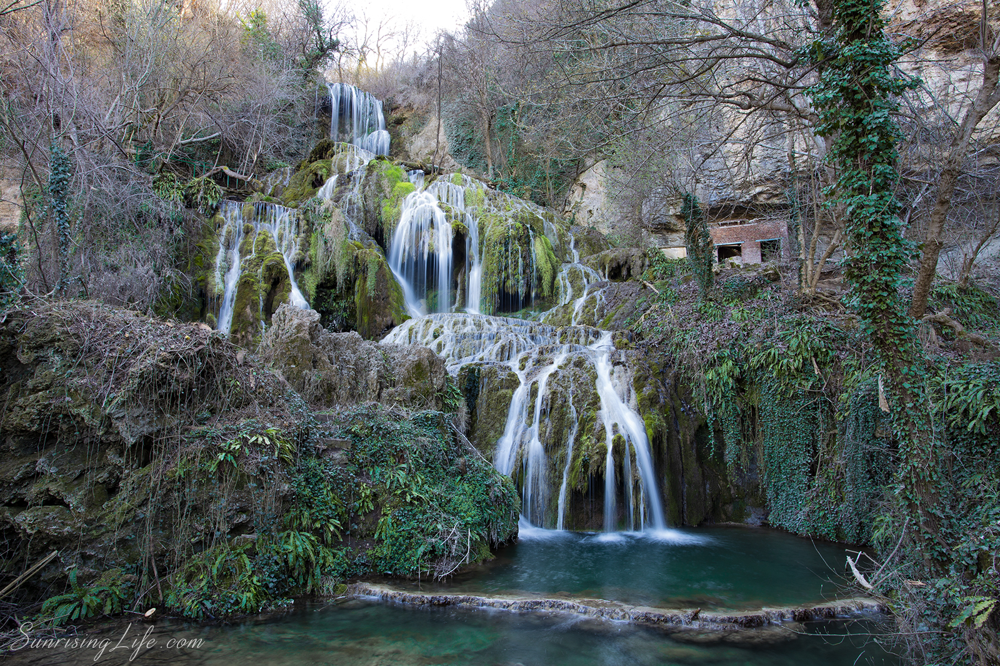

Крушунските водопади
Крушунските водопади – поредица от водопади в близост до село Крушуна, Община Летница, Област Ловеч, Северна България.
Намират се на 6 км от град Летница и са известни със своята живописност. Водопадите представляват дълга травертинова каскада, отделните стъпала на която са самите водопади.
